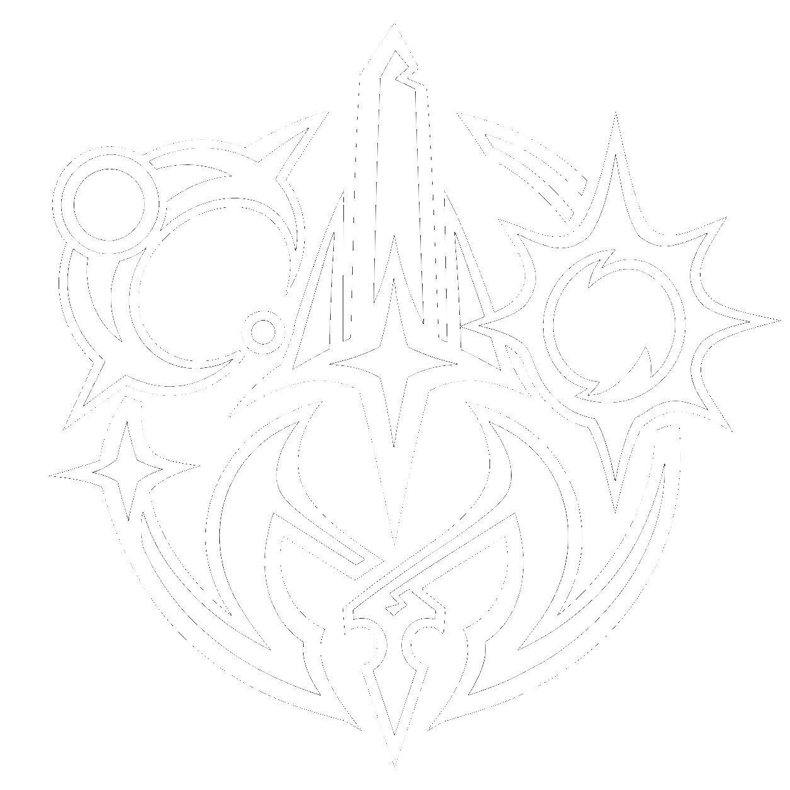

Menu principal
Notes de version

Les Aventuriers de Rimd'Orël
Jouer
Recherche une partie contre l'IA ou un ami, avec le deck de ton choix.
Boutique
Boosters, cartes à l'unité, dos de cartes.
Collection & Deck
Consulte ta collection et construis tes decks.
Le Grimoire
Toutes les règles du jeu, expliquées en détail.
Hauts-faits
Tes badges et récompenses débloqués.
Quêtes
Des objectifs à accomplir, des récompenses à la clé.
Calendrier
Une case à ouvrir chaque jour de jeu.
✕
⚙️
📜 Notes de version
🗺️ Feuille de route
Aucune note de version pour l'instant.
Aucune feuille de route pour l'instant.
Modifier
G
I
S
• Liste
Titre
Texte
Annuler
Publier